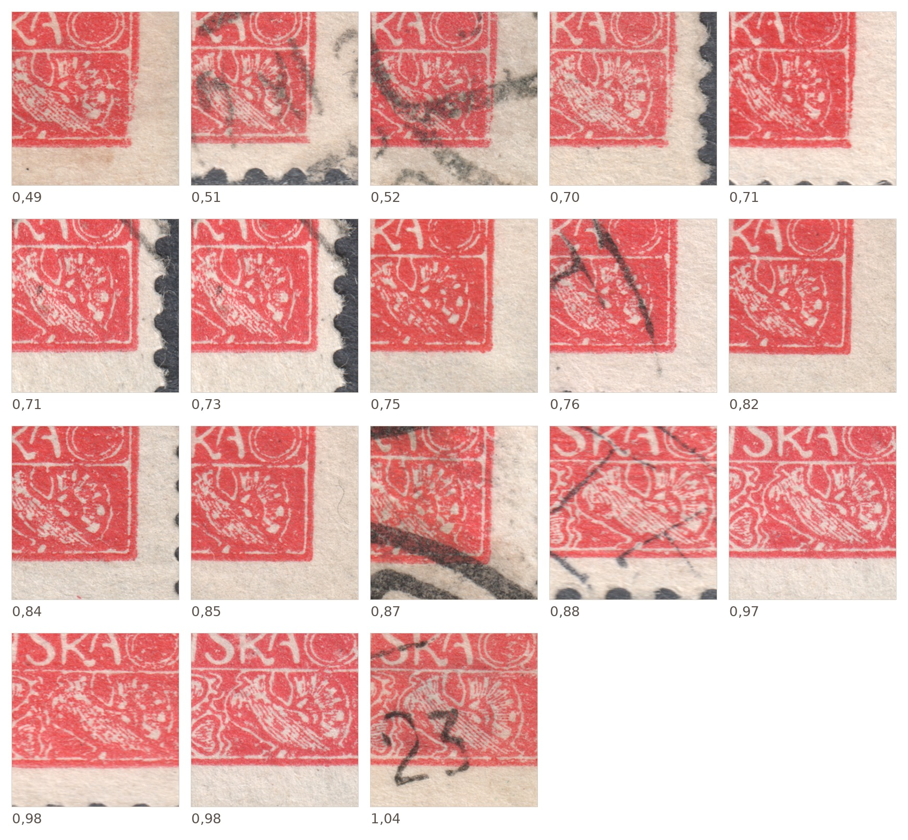

15h – a white spot at 20/V
On field 20 of the fifth printing plate the outer frame fails to close on part of the stamps: the bottom frame line stops just short of the bottom-right corner and the vertical line does not reach it. The corner stays open — the ink is missing there. This is a white spot, that is, locally weakened to missing print. As it sits in the same place on every documented copy, it belongs to the plate, not to the individual stamp.
What it looks like


Left, 20/V with the white spot; right, the same field without it. The circle marks the place in question.
The corner in detail:


Left, the white spot: the bottom line ends in a stub and the corner is missing. Right, a closed right angle.
The frame keeps its shape throughout — nothing of the relief is broken away or displaced, it simply does not print in the corner. That is what distinguishes this case from 60/VI, where the protrusion on the frame edge really was deformed.
Development series
The spot is not equally strong on every copy. For each copy I measure how much ink there is in the outer frame corner against the same frame line elsewhere on the same stamp: an index of 1.0 means there is as much ink in the corner as in the control area, a lower value that it is missing. Normalising within a single copy matters — it removes differences in ink saturation and in scanning that would otherwise swamp the measurement.

The series is continuous — not two separate groups, “with the spot” and “without”. The gradual passage from an open corner to a closed one is exactly what a white spot does: it arises and grows in the course of printing. One-off damage to the plate would give two separate values, not a scale.
The white spot and the perforations
| Perforation | Without the spot | With the spot |
|---|---|---|
| A (13¾:13½) | documented | — |
| B (11¾) | documented | documented |
| C (13¾) | documented | documented |
The survey rests on perforations A, B and C — the three perforations documented on plate V besides the imperforate form.
At first glance one is tempted to read this as: the spot appeared only after the sheets perforated A had been dealt with. The figures in the statistics will not carry that conclusion:
- Perforation A is scarce on plates V–VI: 501 pieces, i.e. roughly 5 % of the material of these plates, against about 47 % each for B and C. Among the copies with the spot the expected number of A copies would be about half a copy — so a nil find proves nothing on its own.
- The earliest documented usages rather argue against it: A on plates 5–6 is documented from 25 March 1920, whereas B from 8 February 1920 and C from 22 February 1920. On these plates perforation A appears last, not first.
- Perforating was moreover the final operation and need not have followed the printing of a sheet immediately. The perforation group therefore says only approximately when a sheet was printed, and works as a dating tool only as a rough guide.
What remains is a sober statement: the spot is documented in perforations B and C, the two groups that make up the overwhelming majority of the material of plate V. Whether it also occurs in perforation A and in the imperforate form remains open — and that is the most useful place for further finds to aim at.
The postage-due overprint
One copy outside the study library carries the 30 DOPLATIT overprint. The spot is pronounced on it — index 0.59, in the range of the strongest copies in the library. The plate in this state also reached sheets that were later used for the postage-due overprints; for collectors this means that 20/V with the spot is worth looking for beyond the ordinary postage stamps.

What next
I would welcome reports of further copies of 20/V — especially in perforation A and in the imperforate form, and above all of copies with a legibly dated cancellation: only cancellation dates will allow the development series to be ordered chronologically and confirm that the spot really does grow over time. Contact details are on the Wanted page.